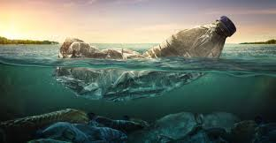

Datos del agua
El agua se mueve constantemente a través de la evaporación, condensación y precipitacón, renovándose en cliclo sin fin.
Los oceanos contiene aproximadamente el 97% de toda el agua de la tierra, pero es salada y no potable.
El agua absorbe y libera calor lentamente ayudando aregular el clima global.
Sin agua, no existiria la vida tal y como la conocemos, ya que es esencial para todas las formas de vida en la tierra.
Un ser humano puede sobrevivir semanas sin comida, pero solo unos pocos sin agua.
Representa alrededor del 60% del peso en adultos y hasta un 75% en bebés.
Página principal
